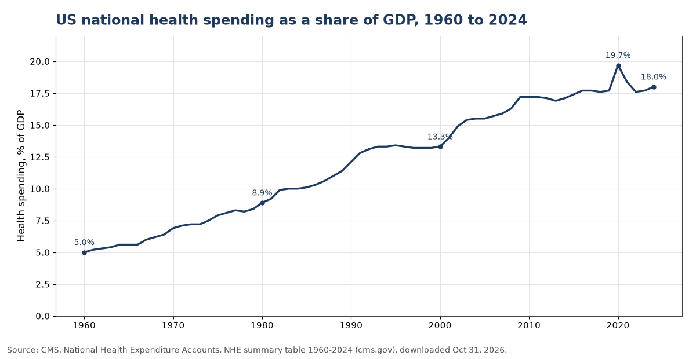
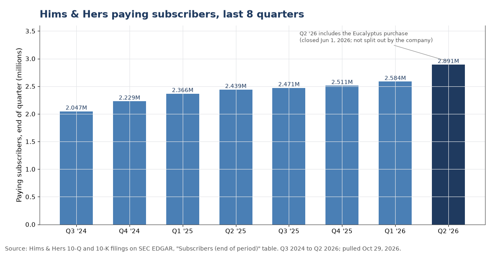
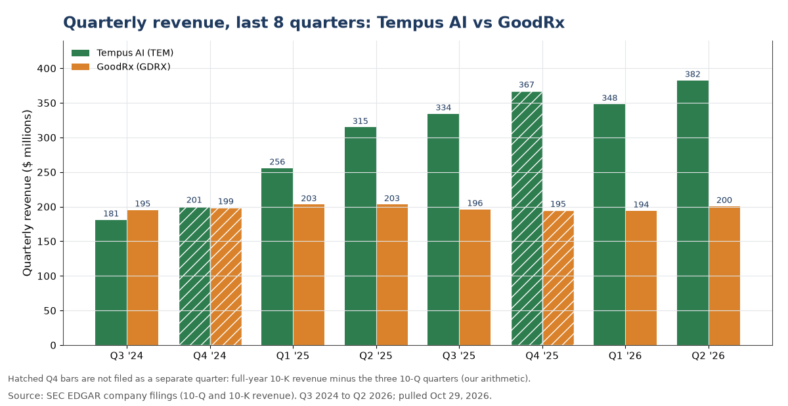
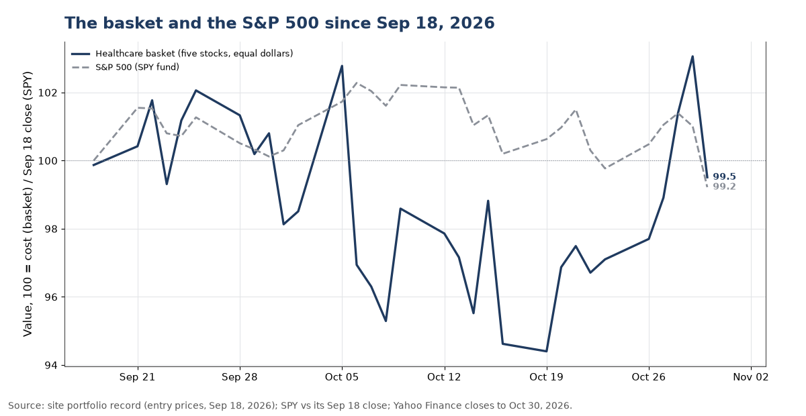

Our view (opinion)
As new treatments become plentiful, the money in medicine moves to whoever owns the patient's path to care: finding the right person, testing them, fitting the treatment, getting it filled and keeping them on it. We think that shift is early, and we own it through a long basket of five stocks bought on Sep 18, 2026: Hims & Hers, GoodRx, Tempus AI, Guardant Health and Abbott.
This is a long-term holding of shares, not a short-dated trade. Six weeks in, the basket is roughly where it started and level with the S&P 500 (Chart 1). The case rests on years of business results, not weeks of prices, and nothing in the latest company reports has broken it.
The idea
The scarce thing in medicine is moving. For a long time the hard problem was inventing a treatment that worked, then forcing it through a slow and expensive system. AI and genomics are making new therapies more common and cheaper to discover. When that happens, “another molecule” stops being the bottleneck. The hard problem becomes finding the right person, diagnosing them early, choosing the treatment that fits, delivering it conveniently, and keeping them on it. That is the interface between a human and the healthcare system. This note is about who owns that interface — not necessarily who owns the drug.
The consumerization of precision medicine is where 3 forces meet. First, more therapies exist, so abundance replaces scarcity at the discovery step. Second, people start managing health as a habit — testing, monitoring, refilling — instead of showing up only when they are already sick. Third, digital rails make care something you can buy like a consumer service: a relationship, a subscription, a same-day fill, a wearable that talks back. The winner does not have to manufacture the breakthrough. They may own the last mile of trust, data, and fulfillment.
This is the next layer after genomics and discovery investing. Discovery asks whether we will invent more. This thesis asks who captures value when therapies are plentiful and consumers actually show up. Both can win in a growing pie. They are sequential, not substitutes. If AI is going to help grow us out of fiscal pressure — including Medicare and Medicaid — the public needs a win they can feel: more cures, lower cost of care.
Three engines decide who keeps most of the profit.
The first is unit economics at the patient, not the visit. The right score is revenue per patient times retention times conditions per patient. Visits are activity; that product is franchise value. A company that owns the consumer relationship can add a second and third condition without paying again to acquire the person. AI inside the clinician–patient loop makes that expansion cheaper: better intake, better routing, better adherence nudges.
The second engine is friction removal and transaction monetization. Someone has to make the filled prescription cheaper, clearer, and easier to complete. Price comparison, manufacturer-direct programs, coupons, and fulfillment do not diagnose — they clear the path between “the right therapy exists” and “the patient actually got it.” When the menu of therapies explodes, the transaction layer gets more valuable, not less. One business owns the patient. Another owns the transaction. Different businesses, each feeding the other.
The third engine is the loop: measure, understand, act, measure again. If hundreds of therapies exist, you need continuous signal — who needs which one, when, and whether it is working. Labs, wearables, and consumer diagnostics turn the body into a feed. That feed lets an interface company personalize, retain, and expand conditions per patient. Without the loop, abundance is noise. With the loop, abundance becomes a habit.
Here is how those engines map onto five parts of the value chain.
The consumer relationship sells ongoing care rather than a single formulation: subscription access, clinician time, an assortment of approved therapies, and a product that widens across conditions. The ideal is simple: each person stays longer, spends more over time, and brings more of their health needs into the same relationship. If that happens, this is the prototype of the whole thesis. If people come for one campaign and leave, the interface story fails here first.
Friction removal and the transaction sit between “a therapy exists” and “a person got it filled at a price they will accept.” This business monetizes the access path, not the diagnosis. As therapy menus grow, comparison, manufacturer programs, and fulfillment become infrastructure. It wins when more people finish getting the medicine they need, at a price they will pay, through this path. It loses when the big pharmacies, middlemen, or drugmakers build that same easy path themselves and cut it out.
Diagnose-and-fit at scale combines tests, longitudinal clinical data, and AI so the right treatment gets matched to the right person — and gets better as volume grows. It is the behind-the-scenes toolmaker for finding and fitting the patient, not the consumer brand. The contribution is decision quality: fewer wrong starts, faster right starts, evidence that compounds with each new case.
Find-and-monitor early matters most where early detection changes outcomes. Liquid biopsy and related monitoring find, select, and then watch whether disease is returning or responding. Medicine becomes a feedback system instead of a one-time event — the clinical version of measure, understand, act, measure again.
Continuous consumer measurement takes a clinical sensor into everyday life — continuous glucose and adjacent metabolic feeds as a habit, not only as a disease label. Without that feed, the other pieces guess; with it, relationship, access, and diagnose-and-fit can personalize and retain.
Upstream discovery tools, trial infrastructure, and wholesale distribution still matter. They are durable — and they are not this expression of the idea. The bottleneck has moved to interface, access, fit, find-and-monitor, and continuous measurement.
This is how I chose to position for the abundant health future ahead for us all.
The historical rhyme
Health care has been one of the economy's most persistent growers. US national health spending was 5.0% of GDP in 1960, 8.9% in 1980, 13.3% in 2000 and 18.0% in 2024, according to the federal government's own accounts (Chart 4). The share is higher at the end of every decade in that record than at its start.
That long climb is the rhyme. For sixty years more of the economy has flowed into health care, and the question has always been which part of the system keeps it. We think the next part to be rewarded is the one closest to the patient, because that is where a crowded menu of treatments turns into a choice someone has to make.

Source: Centers for Medicare & Medicaid Services, National Health Expenditure Accounts, summary table for 1960 to 2024, downloaded Oct 31, 2026. Click the chart to open it full size.
The companies in the basket are already showing the pattern in their own numbers. Hims & Hers grew paying subscribers in each of the last eight quarters, from 2.047 million to 2.891 million (Chart 2). Tempus AI's quarterly revenue more than doubled over the same two years, from $180.9 million to $382.5 million (Chart 3). GoodRx, the price-comparison business, is the exception: its revenue has stayed between $194 million and $203 million a quarter.

Source: Hims & Hers 10-Q and 10-K filings on SEC EDGAR, "Subscribers (end of period)" table, pulled Oct 29, 2026. The second-quarter 2026 count includes Eucalyptus, a company Hims & Hers bought on Jun 1, 2026; it did not say how many subscribers came from that deal. Click the chart to open it full size.

Source: SEC EDGAR company filings (10-Q and 10-K revenue), pulled Oct 29, 2026. Fourth-quarter figures are not filed on their own; they are full-year revenue minus the first three quarters (our arithmetic), shown hatched. Click the chart to open it full size.
What we hold
A long stock basket: $1,000 of shares in each of five companies, $5,000 in total, bought at about 9:30 AM CT on Sep 18, 2026, as recorded in the site's portfolio record. Each company fills one part of the idea.
| Company | Its part of the idea | Bought (Sep 18) | Oct 30 close |
|---|---|---|---|
| Hims & Hers (HIMS) | Owns the consumer relationship | $28.09 | $27.68 |
| GoodRx (GDRX) | Makes a prescription cheaper and easier to fill | $3.33 | $3.49 |
| Tempus AI (TEM) | Matches patients to treatments using test data | $77.97 | $72.22 |
| Guardant Health (GH) | Finds and monitors cancer with blood tests | $183.10 | $178.80 |
| Abbott (ABT) | Continuous measurement, such as glucose sensors | $102.20 | $106.20 |
At the Oct 30 close the basket was worth $4,975, about 0.5% below what it cost. The S&P 500 fund SPY was down about 0.8% from its Sep 18 close. Along the way the basket has swung more than the market, from about 5.6% below cost on Oct 19 to about 3.1% above on Oct 29 (Chart 1).

Source: basket purchase prices and share counts from the site's portfolio record (Sep 18, 2026, about 9:30 AM CT); the S&P 500 line is the SPY fund indexed to its Sep 18 close (price only, no dividends); daily closes from Yahoo Finance through Oct 30, 2026. Click the chart to open it full size.
Upside versus downside
Upside. If all five stocks returned to their highest prices of the past year (Hims & Hers $48.34, GoodRx $3.89, Tempus AI $91.83, Guardant Health $191.05, Abbott $132.03, per Yahoo Finance on Oct 29, 2026), the basket would be worth about $6,400, roughly 28% above cost. That is arithmetic, not a forecast. Guardant Health and GoodRx are already near those highs, so most of the room is in Hims & Hers, Abbott and Tempus AI. The larger upside is the one a price range cannot show: if the idea is right, these businesses are early in a long expansion.
Downside. The same arithmetic at the past year's lowest prices (Hims & Hers $13.74, GoodRx $1.77, Tempus AI $40.77, Guardant Health $74.55, Abbott $81.97) would leave the basket worth about $2,750, roughly 45% below cost. These are volatile companies. Hims & Hers posted a net loss of $86.3 million in the second quarter on $753.2 million of revenue (10-Q). Abbott cut its 2026 sales growth outlook to about 6% on Oct 21 (Abbott release).
Our read: the upside is tied to a multi-year shift in where health spending goes, and the downside is mostly the price swings that come with fast-growing companies. Owning five companies in different parts of the chain means one stumble does not sink the idea.
What would change our mind
- Subscribers stall. Hims & Hers is the clearest test of the consumer relationship. Its third-quarter report on Nov 9, 2026 (company notice) is the first full quarter after the Eucalyptus purchase. A fall below the second quarter's 2.891 million would suggest people come for one campaign and leave.
- The access layer gets cut out. GoodRx's revenue has been flat for two years. In the second quarter its drugmaker programs grew 76% to $61.6 million while prescription discounts fell 26% (company release). If big pharmacies, middlemen or drugmakers build the easy path themselves, that part of the idea fails.
- Testing growth slows. Tempus AI (revenue up 22% in the second quarter, release) and Guardant Health (up 44%, release) need volume to keep compounding. Abbott now sells a blood test for colorectal cancer that competes with Guardant Health's Shield. Tempus AI reports on Nov 2 and Guardant Health on Nov 5.